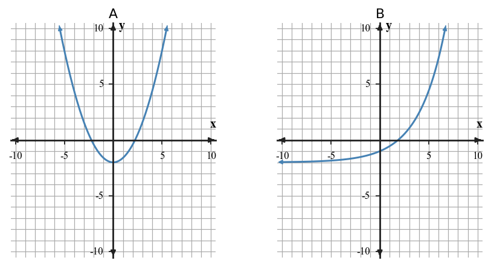

Families are recognized by structure and behavior, not by a single visual clue.
Learning Target
Students will recognize common function families from graphs, tables, equations, and contexts.
- I can design examples of linear, quadratic, exponential, and absolute value relationships using more than one representation.
- I can extend patterns in tables, graphs, equations, and contexts to work with common function families.
- I can critique a proposed function family choice using evidence from rate of change, shape, or equation structure.
Vocabulary / Key Notation Preview
- linear
- quadratic
- exponential
- absolute value
- function family
Sort the vocabulary. Write each vocabulary word in the column that best matches what you know right now. You may move a word later.
| Know for sure | Recognize | Don't know yet |
|---|---|---|
What's to Come
DO NOT SOLVE IT YET.
Circle anything familiar, underline symbols, labels, conditions, data, or features that seem important, and write short notes about what you think may matter later.

- Describe one visible feature of each graph.
- Which graph appears to have a constant rate of change?
- Which graph has a single lowest point and two straight arms?
- Match A-D to linear, quadratic, exponential, and absolute value, and state one piece of evidence for each match.
Let's Get Started
Skim the section. Record what catches your attention before you read closely.
| What I noticed | |
|---|---|
| What I predict | |
| What I wonder |
READ IN SHORT CHUNKS.
Annotate the words and visuals together. Underline evidence, circle or highlight bold vocabulary, label arrows, measurements, or important features, connect sentences to figures, and jot short questions or connections in the margins.
I can design examples of linear, quadratic, exponential, and absolute value relationships using more than one representation.
A function family is a group of relationships that share important structural and behavioral features. In Algebra 1, four common families are linear, quadratic, exponential, and absolute value. A family can be represented by equations, tables, graphs, and contexts.
Linear relationships have constant additive change and graph as straight lines. Quadratic relationships often have constant second differences in equally spaced tables and graph as parabolas. Exponential relationships change by a constant multiplicative factor and curve as repeated multiplication accumulates. Absolute-value relationships form two linear arms meeting at a vertex.
Designing an example means making the representations agree. If you choose an equation, the table values and plotted points must come from that equation, and the context must describe the same kind of change. The family label is useful only when the evidence across forms is consistent.
- What table feature identifies a linear pattern for equally spaced inputs?
- What structural clue in an equation points to an exponential family?
- Why must the representations in a designed example agree?
| Family | Equation clue | Table clue | Graph clue |
|---|---|---|---|
| Linear | first-degree form | constant first difference | straight line |
| Quadratic | $x^2$ term | constant second difference | parabola |
| Exponential | variable in exponent | constant ratio | curved growth/decay |
| Absolute value | $|x|$ structure | distance-like symmetry | V-shape |
Example 1: Read Family Clues in Equations
Classify each equation by family: $y=3x-2$, $y=x^2+1$, $y=2^x$, and $y=|x|-4$. State the structural clue in each equation.
You Try It 1: Read Family Clues in Equations
Classify $y=-2x+5$, $y=x^2-6$, $y=3(2^x)$, and $y=2|x+1|$ by family.
Example 2: Design Two Family Examples
Design one linear relationship and one absolute-value relationship. Give an equation and three matching points for each.
You Try It 2: Design Two Family Examples
Create an exponential example and a quadratic example. Give an equation and four outputs for inputs 0,1,2,3.
- If you create a quadratic equation and table, what must be true of the table values?
I can extend patterns in tables, graphs, equations, and contexts to work with common function families.
Patterns can be extended by looking at the kind of change that defines the family. For linear tables with equally spaced inputs, first differences stay constant. For quadratic tables, first differences change but second differences are constant. For exponential tables, ratios between consecutive nonzero outputs are constant when inputs increase by equal steps.
Graphs offer another form of evidence. A straight line signals constant rate, a parabola has a turning point and curved arms, an exponential graph bends while growth or decay multiplies, and an absolute-value graph has a sharp vertex with straight arms. Shape is useful, but it should be checked against table or equation structure when there is any doubt.
Extending a pattern means continuing the same mathematical rule, not merely guessing from the size of the numbers. Decide whether the pattern is additive, second-difference, multiplicative, or distance-from-a-center, then use that structure to predict what comes next.
- What table evidence distinguishes a quadratic pattern from a linear one?
- What pattern evidence is useful for exponential relationships?
- Why is “the numbers get bigger quickly” weak family evidence?
For equally spaced inputs, compute first differences first. If they are constant, linear is strong evidence. If first differences change but second differences are constant, quadratic is strong evidence. If consecutive output ratios are constant, exponential is strong evidence.
Example 3: Classify a Table Pattern
| x | y |
|---|---|
| 0 | 3 |
| 1 | 5 |
| 2 | 7 |
| 3 | 9 |
Classify the family and cite the table evidence.
You Try It 3: Classify a Table Pattern
| x | y |
|---|---|
| 0 | 2 |
| 1 | 6 |
| 2 | 18 |
| 3 | 54 |
Classify the family and cite the table evidence.
- A graph curves upward and the output values double for equal input steps. Which evidence is more specific, and what family does it support?
I can critique a proposed function family choice using evidence from rate of change, shape, or equation structure.
A strong family classification uses evidence rather than a label. Equation structure may reveal a squared variable, an exponent containing the variable, an absolute-value symbol, or a first-degree form. A table may show constant differences, second differences, or ratios. A graph may show a straight line, vertex, curve, or V-shape.
One clue can be misleading. “The outputs grow fast” does not prove a pattern is exponential; quadratic outputs also grow faster as inputs increase. A graph can also look almost straight over a small window. Use at least two forms of evidence when the classification is not obvious.
Critiquing a family choice means identifying the evidence that supports or contradicts it. State the proposed family, test its defining feature, and explain what the data or representation actually shows.
- Name two different kinds of evidence that can support a family classification.
- Why can graph shape alone be misleading?
- What should a critique include besides saying a classmate is wrong?
When a classification is not obvious, combine two independent clues. For example, a V-shaped graph plus an absolute-value equation is stronger than shape alone; constant second differences plus a parabola is stronger than “it curves.”
Example 4: Compare Two Function Graphs

Compare the two graphs. Classify each family and name one feature that distinguishes them.
You Try It 4: Compare Two Function Graphs

Classify the graph and state one visible feature that supports your answer.
Example 5: Choose a Family for a Context
A savings account balance is multiplied by 1.05 each year. Which family is a natural model, and what feature of the context supports that choice?
You Try It 5: Choose a Family for a Context
The distance from a fixed point on a straight trail is modeled from a signed position. Which family naturally describes distance from that point?
Example 6: Critique an Exponential Claim
| x | y |
|---|---|
| 0 | 1 |
| 1 | 4 |
| 2 | 9 |
| 3 | 16 |
A student says the pattern is exponential because the outputs grow faster. Critique the claim using differences or ratios.
You Try It 6: Critique an Exponential Claim
| x | y |
|---|---|
| 0 | 2 |
| 1 | 5 |
| 2 | 10 |
| 3 | 17 |
A student calls this exponential. Critique the claim.
- A student says a table is exponential because the outputs increase faster each row. What would you calculate next?
Summary
- Linear, quadratic, exponential, and absolute-value families have different structural patterns.
- Use differences, ratios, equation structure, graph shape, and context as evidence.
- Design examples so all representations describe the same family and relationship.
- When a family choice is uncertain, use at least two pieces of evidence.
Common Mistakes
| Watch for... | Better move |
|---|---|
| Classifying from shape alone | Check equation or table structure too. |
| Calling any fast growth exponential | Look for a constant multiplicative ratio. |
| Confusing quadratic and exponential tables | Compare second differences and ratios. |
| Designing mismatched representations | Verify that table values and points come from the chosen equation. |